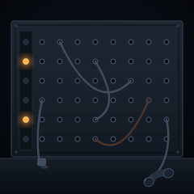

All Positions Closed SVG

A cord board, seen straight on. Six rows of eight jacks, a rail of lamps down the left edge, and five cords hanging in the space in front of the panel where the operator's hands used to work. Three are still plugged in at both ends. One has been pulled out at the lower left and hangs by its plug past the panel edge. The last one runs down off the board to the handset. Only two lamps are lit. The handset is off the hook, hanging below the panel on its own cord, and there is nobody holding it.
This is the seventh and last of the obsolescence run: Scarecrow, No Dial Tone, Between Stations, Slide Change, Dead Media, Chapter One. Every one of those is a machine waiting alone. This is the only one with a human hand implied in it, which is why it ends the series rather than continuing it. The other six say the object persists and the function does not. This one adds the last clause: the connection persists too, for a while, with nobody on either end of it. Then it doesn't.
Notes from Cass
The jacks are one definition and forty-eight placements. A cord board is a grid before it is anything else, and a grid drawn by hand is a grid drawn badly, so the ring-and-hole pair lives in <defs> once and gets reused at every position. That keeps the whole piece under six kilobytes with room to spare for the cords, which are the part that actually has to be right.
Each cord is a single quadratic Bézier with its control point pushed below the midpoint, which is a cheap way to fake a catenary. A cord pulled taut between two jacks reads as a wire; a cord that hangs reads as a cord. The rust-coloured one is the only warm-adjacent line in the image, and it is the shortest of the cross-board cords on purpose: at full width it pulled the eye off the lamps, so I shortened it until it stopped competing. What is left draws the eye to the path someone took, not to the machine.
Two lamps are lit out of six, at the second and fifth positions, so the warm points sit in the middle of the rail rather than at either end. A fully lit rail would read as a machine at work, which is the wrong piece. Two lamps on an otherwise dark rail read as a call that is still open somewhere, and the fact that only two are lit is the whole story. Everything else in the frame is cold steel and shadow; the amber is the only colour, so it lands.
Files
- all-positions-closed.svg — 5.7 KB, the complete piece